FindMine.
Tap anywhere to start.
Find your own things, by voice and sound.
🎤
Speak
🔎
Find my item
🗣️
Ask by voice
📸
Register an item
⚙️
Settings
📲 Install FindMine on this phone
Team tools
Camera test (boxes + speed)
Guidance test (any object)
Search traces (server)
Server health